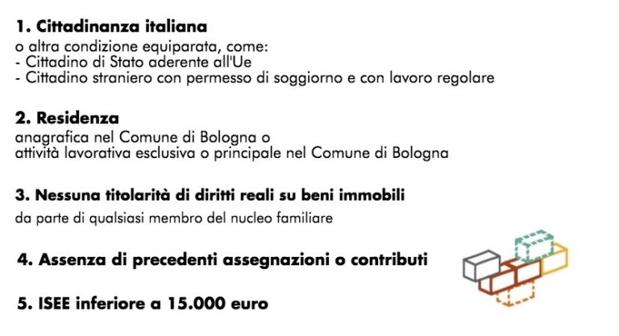
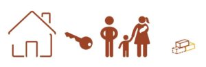

Come dovrebbe funzionare
"Ogni amministrazione comunale adotta il proprio regolamento per l'assegnazione e la gestione degli alloggi E.R.P."
Le procedure per ottenere un alloggio popolare sono descritte dettagliatamente all'interno del Regolamento per l’assegnazione e la gestione degli alloggi di edilizia residenziale pubblica presente sul sito di Acer Bologna.
Riassumiamo di seguito i passaggi principali del processo di assegnazione a partire dalla compilazione della domanda, assegnazione del punteggio e inserimento in graduatoria, fino all'effettiva consegna dell'immobile.
PRESENTAZIONE DELLA DOMANDA
La domanda per la casa popolare può essere presentata in qualunque momento da qualsiasi cittadino maggiorenne, per se stesso e per il proprio nucleo famigliare, se in possesso dei requisiti richiesti.
Compilazione e successivo inoltro sono possibili a partire dalla pubblicazione di un apposito avviso sul sito web di Acer e del Comune di Bologna, in cui sono specificate le relative indicazioni e scadenze.
Le domande possono essere presentate, ed eventualmente successivamente integrate, esclusivamente online sull’apposito portale web, previa registrazione e accesso. Considerate le difficoltà di molte persone nella corretta ed esaustiva compilazione, sono state stipulate diverse convenzioni con associazioni sindacali a tutela degli inquilini al fine di risolvere eventuali dubbi o difficoltà nella presentazione della domanda.
REQUISITI
“I requisiti di accesso sono stabiliti con disciplina regionale e devono essere in possesso del richiedente e del suo nucleo al momento di presentazione della domanda e alla data di verifica degli stessi”.
I richiedenti devono trovarsi in specifiche condizioni di particolare bisogno sociale, che riguardano principalmente aspetti come:
- Età
- Condizione lavorativa
- Situazione economica
- Condizione di non autosufficienza
Nello specifico, requisiti imprescindibili per poter avere diritto all’inserimento nella graduatoria sono:
È inoltre necessaria l’estinzione di morosità pregresse nel pagamento dei canoni d’affitto o delle indennità di occupazione e/o di oneri accessori in alloggi pubblici ERP o di edilizia agevolata, a meno che non sia previsto un progetto socio-assistenziale apposito.
ASSEGNAZIONE PUNTEGGI
In sede di analisi delle domande pervenute, sulla base delle condizioni dichiarate verranno assegnati dei punteggi che, successivamente sommati, determineranno il posizionamento nella graduatoria definitiva.
Il valore dei punteggi è definito con una delibera della Giunta comunale, anche grazie al sostegno di organizzazioni sindacali, di categoria e di inquilini.
Per l’assegnazione dei punteggi, le condizioni che devono sussistere possono essere di natura oggettiva oppure soggettiva, e conducono all’assegnazione di un valore rappresentativo della specifica situazione. Eventuali condizioni di esclusione sociale vengono certificate solo dai servizi sociali territoriali di riferimento, e non comportano alcun punteggio.
CLASSIFICAZIONE DELLE DOMANDE
Scaduto il termine per la presentazione, tutte le domande pervenute vengono valutate da un’apposita Commissione Tecnica Casa, i cui componenti sono nominati dal Direttore del Settore.
Alla fine della valutazione, anche in base a eventuali ricorsi in opposizione alla Commissione, le domande ritenute ammissibili vengono ordinate all’interno di una prima graduatoria secondo determinati criteri:
- Punteggio complessivo attribuito.
- Le domande con lo stesso punteggio vengono ordinate dando precedenza a quelle con ISEE inferiore.
- Se sono presenti più domande con stesso punteggio e stesso ISEE viene data la priorità all’anzianità della domanda.
La graduatoria viene approvata entro 120 giorni dal termine di ricezione delle domande.
Le domande presenti in graduatoria che non hanno ricevuto un’assegnazione, verranno inserite nelle graduatorie successive, aggiornate ogni 6 mesi, per la formazione delle quali sarà emanato un avviso pubblico che inviterà i cittadini a presentare nuove domande o effettuare eventuali integrazioni a quelle già inoltrate. Ogni aggiornamento di graduatoria sostituisce in via definitiva quello precedente.
ACCERTAMENTI E CONSEGNA DELL’ALLOGGIO
Prima dell’assegnazione, i requisiti e le condizioni valutate in sede di analisi devono essere verificati. Accade spesso, infatti, che dal momento della presentazione della domanda al momento della verifica e della pubblicazione della graduatoria, le condizioni del richiedente subiscano dei cambiamenti.
I controlli devono verificare la veridicità e la congruità di quanto affermato nella domanda.
Quindi l’interessato viene convocato per confermare la sussistenza dei requisiti dichiarati, e, in caso di esito positivo, si procede con l’individuazione di particolari bisogni e caratteristiche, anche tramite la collaborazione dei Servizi sociali, al fine di consegnare un alloggio che meglio possa soddisfare le necessità del nucleo relativamente a:
- composizione numerica del nucleo
- presenza di generazioni e/o sessi diversi tra i componenti
- provenienza etnica e nazionalità
- problematiche socio-sanitarie
- localizzazione del luogo di lavoro
- localizzazione di familiari da assistere
- localizzazione di familiari che possano assistere componenti del nucleo in stato di bisogno
- localizzazione di luoghi di cura e/o assistenza cui uno o più membri devono recarsi con periodicità

Sulla base della graduatoria in vigore vengono assegnati gli alloggi disponibili, tramite decreto amministrativo e con la firma di apposito contratto di locazione.
A questo punto l’assegnatario ha a disposizione 60 giorni per occupare l’alloggio, pena la revoca dell’assegnazione.